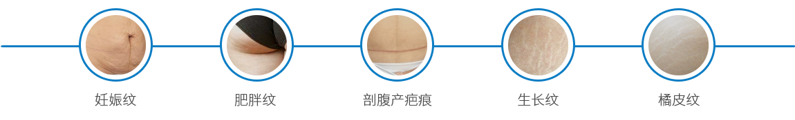
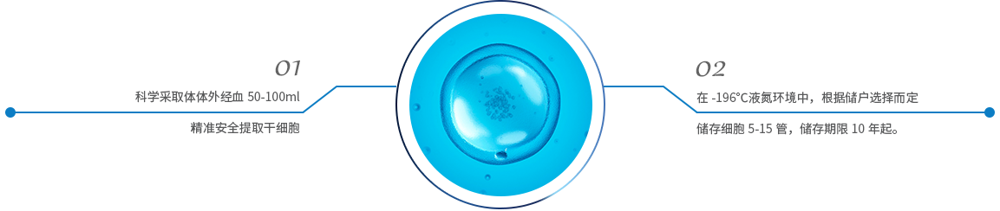
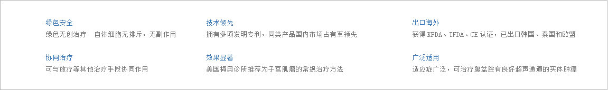

完整疗愈健康管理中心
通过生物电，生物共振，能量学，心理等方法，综合对客人进行细胞层面的保养，尤其是线粒体ATP层面上的保养。
妊娠纹的位置主要在腹壁上，也会出现在大腿内外侧、臀部、乳房等处，初产妇最为明显。并且一旦出现后，并不会随时间慢慢消失，使孕妇妈咪的皮肤出现松弛、褶皱、色素沉着，乳房下坠，腹部脂肪堆积，严重影响了孕妇妈咪产后的体态和身心健康。
自体活细胞祛妊娠纹原理提取自身血液的活细胞，通过真皮浅层注射方法注射到皮肤中，含多种自体生长因子可深入整个皮肤组织，修复受损的细胞肌体，激活细胞活性，调整皮肤全层结构，可刺激大量胶原蛋白、弹性纤维、胶质等的产生，让皮肤组织重组再生，修复因外力牵拉而受到不同程度的损伤或断裂皮肤纤维，从而达到完全祛妊娠纹。在自体活细胞的作用下，断裂凹陷的皮肤组织处迅速产生新的胶原蛋白和弹力纤维。自体活细胞祛妊娠纹是目前治疗妊娠纹最有效的方法，受到亚洲众多演艺明星的欢迎。
适应问题
治疗原理
治疗流程
自体细胞修复妊娠纹
